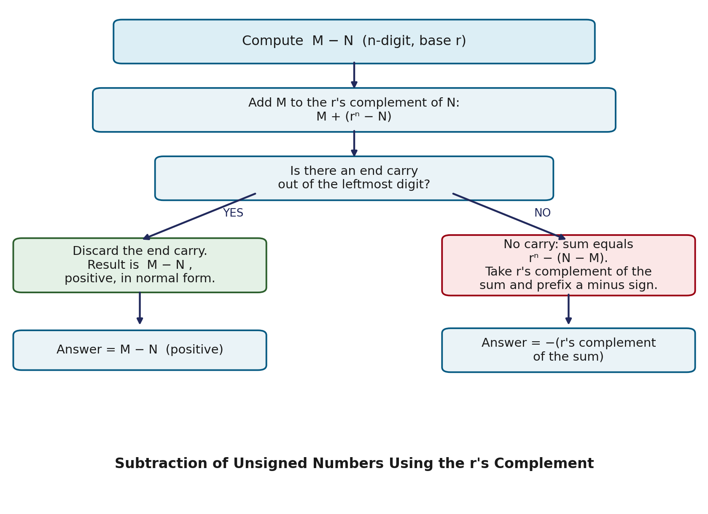

Digital hardware is built to add — a subtractor circuit is extra silicon nobody wants to pay for. Complements are the trick that makes this possible: they let a computer perform subtraction using nothing but an adder and a simple bit-flip. This page covers what complements are, the two flavors every radix has, and how they turn A − B into an addition problem.
What Are Complements?
The complement of a number is defined relative to the base (radix) of the number system it's written in, and relative to a fixed number of digits. Every radix r system defines two complements:
- The (r − 1)'s complement (also called the diminished radix complement)
- The r's complement (also called the radix complement)
(r − 1)'s complement of N = (rⁿ − 1) − N
r's complement of N = rⁿ − N = [(r − 1)'s complement of N] + 1
The second formula is just the first plus 1 — that relationship is the key to computing either complement quickly.
Types of Complements
In the Decimal System (Base 10)
- 9's complement: subtract each digit from 9, or compute (10ⁿ − 1) − N.
- 10's complement: take the 9's complement and add 1.
In the Binary System (Base 2)
- 1's complement: subtract each bit from 1 — in practice just flip every bit. No arithmetic at all, just inverters — the fastest complement in hardware.
- 2's complement: take the 1's complement and add 1. Used universally for signed integers in real computers.
Worked Examples
Decimal — find the 9's and 10's complement of 546700:
9's complement = 999999 − 546700 = 453299
10's complement = 453299 + 1 = 453300
Binary — find the 1's and 2's complement of 1011001:
1's complement: flip every bit → 0100110
2's complement: 0100110 + 1 → 0100111
Subtraction Using Complements
To compute M − N for unsigned n-digit numbers, add M to the r's complement of N instead of subtracting directly.

Fig: Subtraction using r's complement — end carry determines sign of result
| End carry? | Meaning | Action |
|---|
| ✅ Yes | M ≥ N → positive result | Discard carry. Result is M − N. |
| ❌ No | M < N → negative result | Take r's complement of sum, attach minus sign. |
Worked Example 1 — Decimal, carry produced (M ≥ N)
72532 − 13250:
10's complement of 13250 = 86750
Sum = 72532 + 86750 = 159282
End carry → discard it → 59282 ✓ (positive)
Worked Example 2 — Decimal, no carry (M < N)
13250 − 72532:
10's complement of 72532 = 27468
Sum = 13250 + 27468 = 40718
No end carry → negative
10's complement of 40718 = 59282
Answer = −59282 ✓
Worked Example 3 — Binary
X = 1010100 (84), Y = 1000011 (67)
X − Y:
2's complement of Y = 0111101
Sum = 1010100 + 0111101 = 10010001
End carry → discard → 0010001 = +17 ✓
Y − X:
2's complement of X = 0101100
Sum = 1000011 + 0101100 = 1101111
No end carry → take 2's complement → 0010001
Answer = −17 ✓
Common Pitfalls
- Don't confuse the two complements. The (r−1)'s complement is a pure digit-wise operation; the r's complement needs the extra "+1". Mixing these up is the single most common mistake.
- The carry logic is backwards from intuition. Carry present = result already correct and positive (drop the carry). No carry = result is negative, needs one more complement step.
- Fix the digit width first. A complement is only defined relative to a specific number of digits n — padding changes the complement.
Applications of Complements
- Representing negative numbers: the 2's complement system is how every modern CPU stores signed integers — normal binary addition handles negatives automatically.
- Simplifying arithmetic circuits: subtraction reduces to addition-plus-complement, so a single adder handles both operations.
- Error detection: checksums are often the complement of a data sum — mismatch means data was corrupted.
Summary
| Complement | Formula | Binary shortcut |
|---|
| (r−1)'s | (rⁿ−1) − N | Toggle all bits (inverters only) |
| r's | rⁿ − N | Toggle all bits + 1 |
| Subtraction M−N | End carry? | Result |
|---|
| M ≥ N | Yes | Positive — discard carry |
| M < N | No | Negative — complement result, attach − |